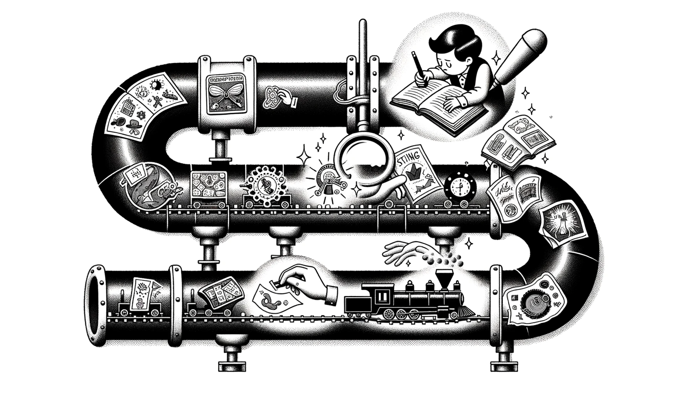

A Simple understanding of Transformer

The 𝗧𝗿𝗮𝗻𝘀𝗳𝗼𝗿𝗺𝗲𝗿 architecture is the fundamental building block that enables LLM's to understand and generate text. Let's break it down as if we're reading a magical storybook. Each component of a Transformer model is like a unique character in this captivating tale!
𝗜𝗻𝗽𝘂𝘁 𝗮𝗻𝗱 𝗢𝘂𝘁𝗽𝘂𝘁: Imagine you have a magic storytelling book. You tell it a sentence (input), and it gives you a new sentence (output) that continues the story.
𝗘𝗺𝗯𝗲𝗱𝗱𝗶𝗻𝗴 𝗟𝗮𝘆𝗲𝗿: First, each word in the sentence you tell the magic book gets turned into a special sticker. These stickers help the book understand what each word really means.
𝗣𝗼𝘀𝗶𝘁𝗶𝗼𝗻𝗮𝗹 𝗘𝗻𝗰𝗼𝗱𝗶𝗻𝗴: To make sure the book knows the order of the words in your sentence, each sticker gets a number tag. So the book knows "the cat ate" is different from "ate the cat."
𝗔𝘁𝘁𝗲𝗻𝘁𝗶𝗼𝗻 𝗠𝗲𝗰𝗵𝗮𝗻𝗶𝘀𝗺: The book has a magical magnifying glass. It uses it to look at all the stickers (words) you gave it, but it pays more 'attention' to the most important ones for understanding the story.
𝗠𝘂𝗹𝘁𝗶-𝗛𝗲𝗮𝗱 𝗔𝘁𝘁𝗲𝗻𝘁𝗶𝗼𝗻: Imagine not just one, but several magical magnifying glasses looking at different parts of your sentence at the same time. This helps the book get a really good understanding of what you said.
𝗙𝗲𝗲𝗱-𝗙𝗼𝗿𝘄𝗮𝗿𝗱 𝗟𝗮𝘆𝗲𝗿: It's like the book's "editor," taking all the important words from your sentence and crafting them into a polished new line for the story.
𝗡𝗼𝗿𝗺𝗮𝗹𝗶𝘇𝗮𝘁𝗶𝗼𝗻: Sometimes the book gets too excited and starts talking really loudly or softly. Normalization is like a volume knob that makes sure everything sounds just right.
𝗗𝗲𝗰𝗼𝗱𝗲𝗿: Now, the book uses another magical tool to turn its thoughts into a new sentence that it can tell you, continuing the story.